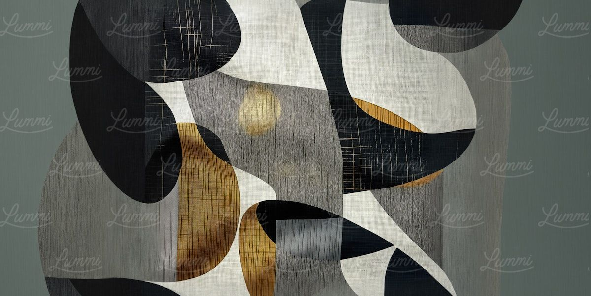

Voltar ao blog
Automação administrativa para empresas em Roraima: por onde começar

Quem mais ganha com automação administrativa
Empresas físicas que já operam e crescem, especialmente no agronegócio e na pequena indústria, tendem a acumular uma rotina administrativa pesada: notas fiscais, recibos, comprovantes, controle de materiais e de gastos por sócio. Quando o dono concentra tudo isso, a empresa depende dele para andar.
Como escolher a primeira rotina
Procure uma tarefa que reúna quatro características:
- se repete com frequência;
- tem volume suficiente para consumir horas;
- segue regras razoavelmente claras;
- causa uma dor real, como atraso, erro ou falta de informação.
Exemplos de rotinas candidatas
- organizar e lançar notas fiscais, recibos e comprovantes acumulados;
- descobrir quanto cada sócio gastou em um período;
- conferir informações de documentos antes de enviá-las ao contador;
- montar uma base de consulta por fornecedor, categoria e período.
O que perguntar antes de contratar
- Quem confere os dados no fim, e como essa conferência acontece?
- Onde os meus documentos ficam guardados e quem tem acesso?
- Como e quando é feita a cobrança?
- Haverá acompanhamento direto durante e depois da implementação?
Atendimento perto de você
A Kairos atua inicialmente em Boa Vista, Roraima, com acompanhamento direto. O primeiro passo é uma conversa para entender a rotina da empresa e indicar, com honestidade, se faz sentido automatizá-la e por onde começar.
Quer ser um dos nossos cases?
4 vagas por mês. Implementação sem custo para quem se encaixa.